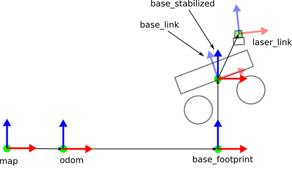
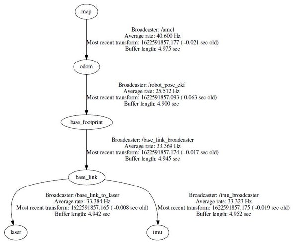

Links
Links in Gazebo
In Gazebo, a link refers to a rigid body within the simulated world. It is synonymous with the concept of a body in the URDF (Unified Robot Description Format) context. Links represent physical objects such as robot parts, sensors, or any other components that interact with the simulation environment. Each link has intrinsic properties like mass, friction coefficients, and a pose (position and orientation) relative to the world frame. Links are connected to each other via joints, forming a Gazebo model. A model is essentially a collection of interconnected links.
Important concept
The concept of the links and TF2 is a very basic concept which must be understood. Make you familiar with it.
Frame IDs
A frame ID (also known as a coordinate frame) defines a reference coordinate system within the simulation. In ROS and Gazebo, different components (such as links, sensors, or cameras) have their own coordinate frames. Commonly used frame IDs include:
- World frame: The global reference frame in which all other frames are defined. It remains fixed relative to the simulated world.
- Link frames: Each link has its own local coordinate frame. The pose of a link is specified relative to this frame.
- Sensor frames: Sensors (like cameras, IMUs, or lidars) have their own frames. For example, an IMU sensor may have a frame attached to the robot’s body.
- Base frame: Often used for mobile robots, the base frame represents the robot’s footprint or chassis.
- End-effector frame: For robotic arms, this frame corresponds to the tool or end-effector. Transformations between frames allow us to express positions and orientations of objects relative to each other.
Note: Remember that understanding links and frame IDs is crucial for correctly modeling and simulating robots in Gazebo.
Why Coordinate Frames Are Important?
In a real-world scenario, in order for the robot to avoid obstacles as it moves around in the environment, we need to convert a detected object’s coordinates in the LIDAR coordinate frame to equivalent coordinates in the robot base’s frame.
You can see why coordinate frames and being able to transform data from one coordinate frame to another is important for accurate autonomous navigation.
Standard Coordinate Frames in ROS for a Mobile Robot
Below are the standard coordinate frames for a basic two wheeled differential drive robot.
- The red arrows represent the x axes
- The blue arrows represent the z axes
- The green dots (into the page) represent the y axes.

The official ROS documents have an explanation of these coordinate frames, but let’s briefly define the main ones.
- map frame has its origin at some arbitrarily chosen point in the world. This coordinate frame is fixed in the world.
- odom frame has its origin at the point where the robot is initialized. This coordinate frame is fixed in the world.
- base_footprint has its origin directly under the center of the robot. It is the 2D pose of the robot. This coordinate frame moves as the robot moves.
- base_link has its origin directly at the pivot point or center of the robot. This coordinate frame moves as the robot moves.
- laser_link has its origin at the center of the laser sensor (i.e. LIDAR). This coordinate frame remains fixed (i.e. “static”) relative to the base_link. If you have other sensors on your robot, like an IMU, you can have a coordinate frame for that as well.
For coordinate frames that don’t change relative to each other through time (e.g. laser_link to base_link stays static because the laser is attached to the robot), we use the Static Transform Publisher.
For coordinate frames that do change relative to each other through time (e.g. map to base_link), we use tf broadcasters and listeners. A lot of ROS packages handle these moving coordinate frame transforms for you, so you often don’t need to write these yourself.

static_transform_publisher x y z yaw pitch roll frame_id child_frame_id period_in_ms
From the ROS website: “Publish a static coordinate transform to tf using an x/y/z offset in meters and yaw/pitch/roll in radians. (yaw is rotation about Z, pitch is rotation about Y, and roll is rotation about X). The period, in milliseconds, specifies how often to send a transform. 100ms (10hz) is a good value.”
Map to Odom
Base Link to Laser base_link -> laser transform gives us the position and orientation of the laser inside the base_link’s coordinate frame. This transform is static.
References
Coordinate Frames and Transforms for ROS-based Mobile Robots